此教程非保姆级教程，为了能流畅阅读本教程，你首先应具备一定docker基础，会从dockerhub拉取镜像并部署。其次一定的英语阅读能力，遇到问题请先查看相关项目的github再来提问。最后欢迎大家使用留言板功能啊。
1.软件及硬件
1.1 软件列表
- Docker ：这个应该不用我多做介绍，本教程基于docker而非物理机安装，应该全平台通用。
Docker-compose（非必须，看个人情况）
Radarr：电影追踪服务，我个人的理解在这套软件里相当于调度器，官网有详细介绍，建议大家去github上多做了解，方便调试。
Sonarr：电视追踪服务，与radarr一样。官网
Lidarr：音乐追踪服务，与上面两个作用一致。官网
Bazarr：与sonarr和radarr搭配使用，自动下载radarr、sonarr监控库中缺少的字幕。目前这个项目虽然支持伪射手、字幕库、opensubtitle，但还是不够成熟。许多字幕字幕网站能搜到，bazarr却不能，按需安装。官网
Jackett：这个我也是不好怎么解释，类似资源爬虫、搜索引擎。在这套软件中提供信息搜集的服务。支持非常多的主流pt站与bt站，通过定时爬取资源来给radarr、sonarr、lidarr提供搜索结果和rss服务。github
Qbittorrent：下载器，可更换为radarr、sonarr、lidarr支持的其他下载器，如tr等。
Jellyfin：媒体服务器，可以更换为plex、emby。
1.2 硬件要求
太穷，至今依旧只有小贝壳，没有正经x86 nas。贝壳是灯大的小钢炮，配置完这套软件使用了两个月以上了，勉强能跑动。qb下载时负载飙升，webui会有卡顿，还能过得去。内存方面建议2G以上，jackett为减少爬取网站的次数会缓存页面，github上说会比较吃内存。
2.原理
这个github上有人讲的比我明白，建议大家看完How it Works再配置，磨刀不误砍柴工～。[wiki](https://github.com/xombiemp/ultimate-torrent-setup/wiki)3.文件夹结构
这里我贴上我的文件夹结构，大家嫌麻烦的话可不按我的来建立文件夹。以下教程都是以这个目录结构为基础，大家自行修docker修改路径映射。apps目录为docker应用的配置文件保存地点，downloads目录为下载文件夹，media目录为媒体文件夹，用来保存整理好的媒体文件，比如电影，电视，音乐，软件等等。其他的子文件夹脑图都有说明。

4.建立docker容器
这里所有的app，我都是用的Linuxserver的镜像，docker create命令大家按照镜像介绍页给的就行，这儿只说下目录映射的问题，其余的大家看个人情况修改。注意保证docker容器对相关目录有读写权限，搞不懂直接777.
4.1 jackett
-v /apps/jackett:/config \
-v /downloads/watch:/downloads \ 这儿的downloads文件夹映射到你的下载器监控文件夹，在jackett中manual search之后手动下载的种子就会下载到这里，然后被下载器自动下载。
4.2 radarr
-v /apps/radarr:/config \
-v /media/movie:/movies \
-v /downloads:/downloads \ movies文件夹是映射到整理好的目录去，就是最终jellyfin搜刮的目录而不是下载目录。大家分类比较详细的可以继续添加映射，比如 -v /media/anime:/anime，看个人情况。downloads文件夹这儿有个坑，按照我的结构建立文件夹的就这样就可以了，没按我的结构建立文件夹，看这部分的最后！，sonarr，lidarr，bazarr的路径映射一样，按照radarr的自行修改。
4.3 jellyfin
-v /apps/jellyfin:/config \
-v /media/tv:/data/tvshows \
-v /media/movie:/data/movies \ 这儿的tvshows跟movies都映射到整理好的目录中去，比如我这就是/media下面的子文件夹。还是一样，分类比较细的可以继续映射，比如-v /media/anime:/data/anime，自行增加。
4.4 qbittorrent
-v /apps/qbittorrent:/config \
-v /downloads:/downloads \ 最重要的部分在这！！！downloads文件夹这个跟sonarr，radarr，lidarr的downloads文件夹映射要注意一件事情！！！以radarr为例，radarr在跟踪电影时，你必须告诉他，你最终要把电影放哪去。但是，下载器下载到哪里radarr是通过api查询下载器得知的。这就有一个问题，很多人下载器可能是物理机安装的，比如小钢炮自带的。而radarr可能看我的教程通过docker安装。下载器的下载地址是你物理机的真实地址，比如你的电影下载地址是/media/disk1/downloads/movie，但是你在建立radarr时，是这样映射的 -v /media/disk1/downloas:/downloads。下载完成之后，radarr通过api查询到电影的下载完成后保存的地址是/media/disk1/downloads/movie，虽然你已经把/media/disk1/downloas映射为容器内的/downloads了，但是radarr容器内并没有/media/disk1/downloads/movie这个地址。它不会自动把这个物理地址转换为容器内的地址，而是也会尝试直接在容器内找/media/disk1/downloads/movie这个地址，所以最终结果就是：radarr在推送种子去下载器下载没问题，但是却没办法创建硬连接以及重命名。所以，要么就再创建一个下载器的docker，把物理机的下载地址映射为容器内的/downloads。要么就要在创建radarr、sonarr、lidarr时做同路径映射，如-v /media/disk1/downloas:/media/disk1/downloas。
5.软件配置
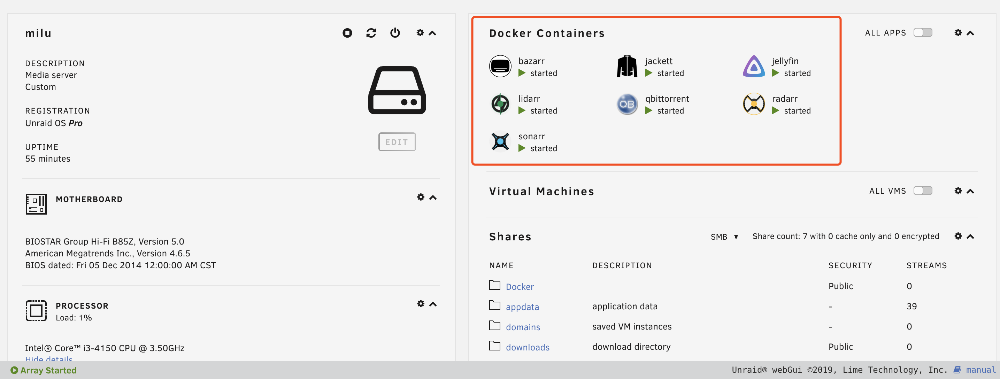
好了，这就是这套软件所有的app了，现在我们挨个来配置，这是本教程最重要的部分。
5.1 jackett配置
ip：9117打开jackett的webui，长这个样子
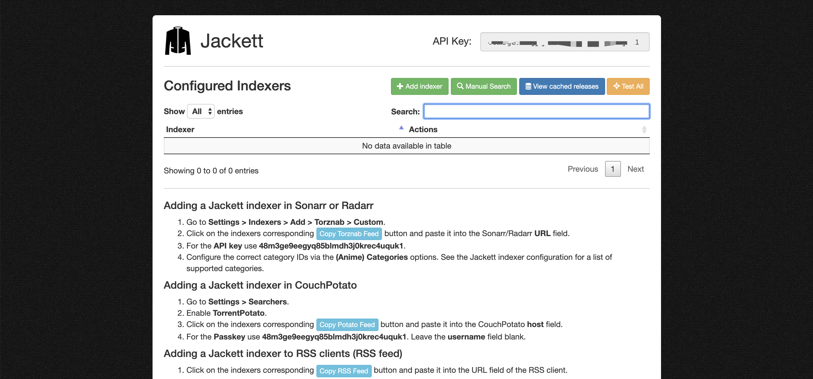
这里主要要配置或者说有用的东西是这几个
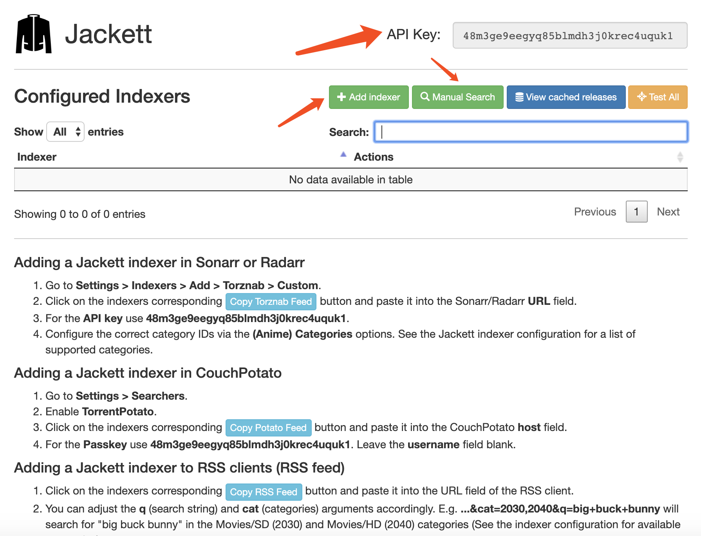
现在来配置，首先，点add indexer，右上角搜你的pt站，或者按语言排序，一个个找，没有的话就是不支持。我其实很好奇，连beitai都有了，为什么不支持猫站跟朋友呢。这几个bt站都是动漫站，我测试了，没法用。找到pt站之后，点扳手符号，然后需要什么信息就填什么就好了。有的站点需要cookies，怎么获取cookies的话，大家上网找吧。还有就是馒头的话，有两个，一个需要提供账号密码，那就需要关闭二次验证，不然登不上。这次新增加的这个MTeamTP2FA是通过cookies登陆的，可以不用关闭二次验证，大家看自己情况配置其中一个就好。
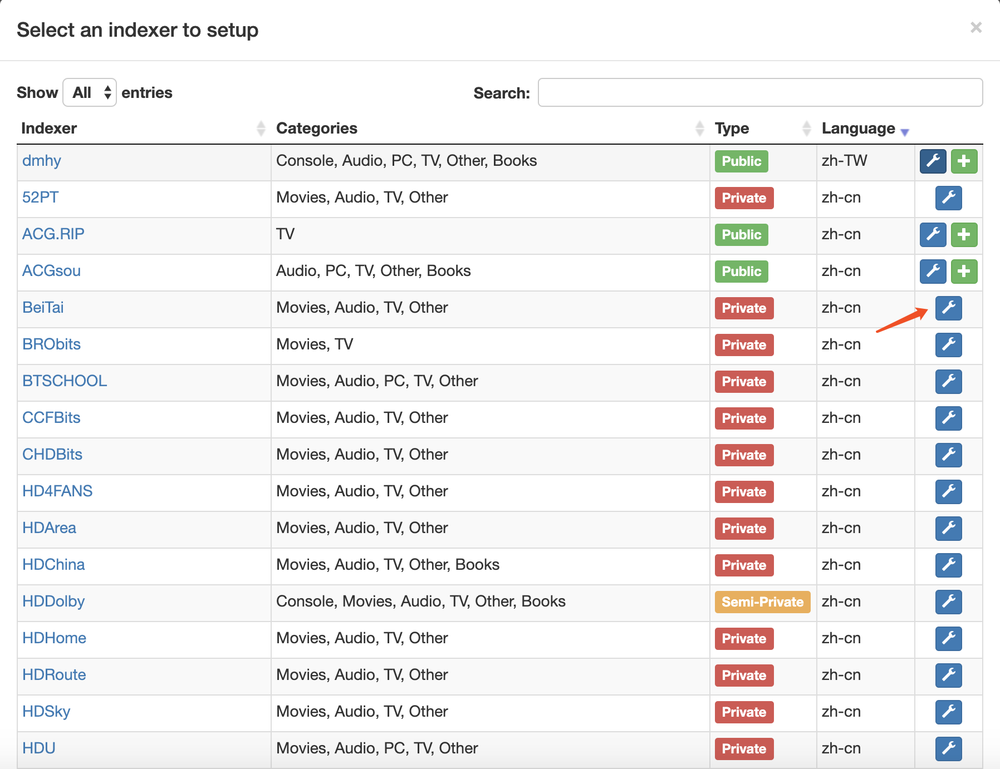
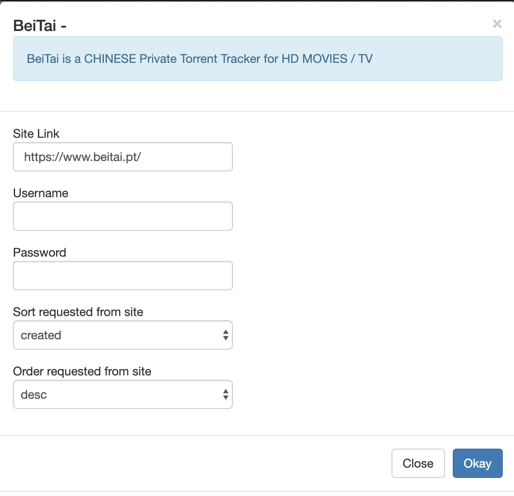
配置好了所有站点之后，点test all测试下配置有没有错误。没有错误的话，往下翻，找到jackett本身的配置。
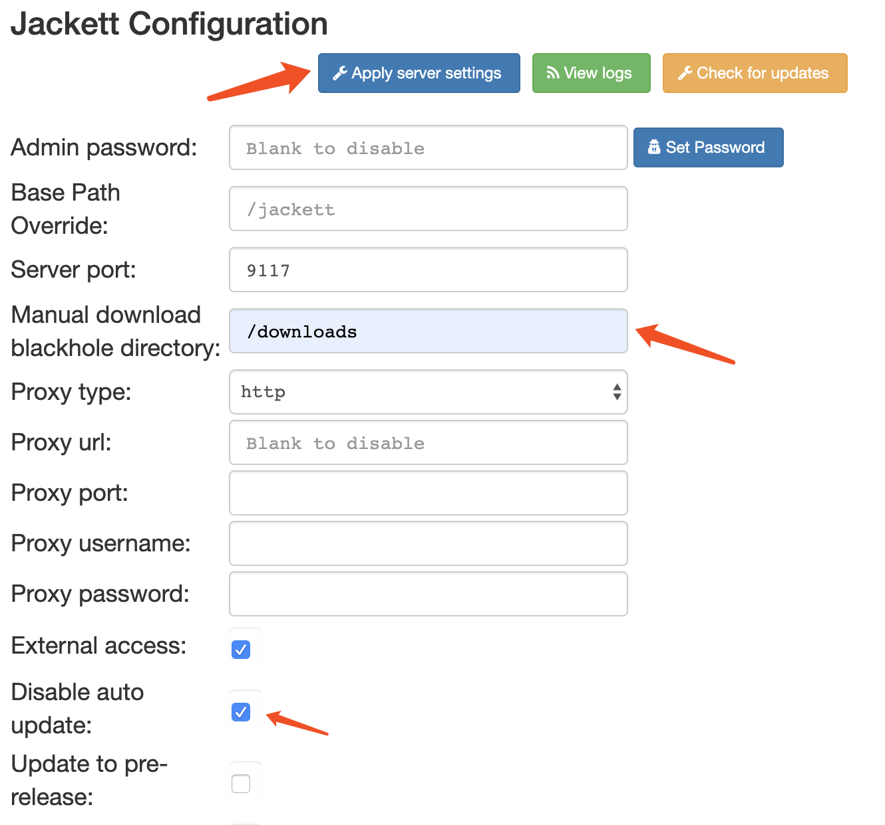
blackhole directory改成/downloads，这就是qb监控文件夹。关闭自动更新，然后应用。jackett就配置完成。然后别着急关闭jackett，一会还有用。下面来配置radarr。
5.2 radarr配置
这儿以radarr为例，sonarr，lidarr配置项跟radarr异曲同工。看懂了radarr的配置就依样画葫芦配置sonarr跟lidarr吧，这儿就不重复了。ip：7878打开webui
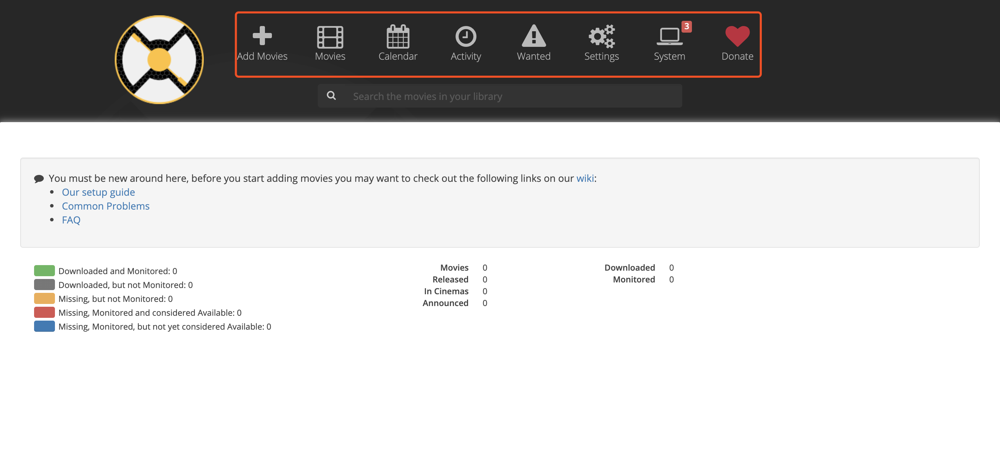
菜单栏的这些应该都看得懂吧，左边第一个是添加电影，第二个查看电影库，第三个是日历，会显示你监控的电影的上映，以及BD发行的时间。activity是当前活动，wanted会显示你监控了但目前还没有下载到的电影，setting系统设置，system查看系统信息。建议好好看下Common Problems和FAQ。现在点到setting来配置radarr。
首先是Media Management，这里包括导入及重命名的一些设置，大家按照我的设置来吧。
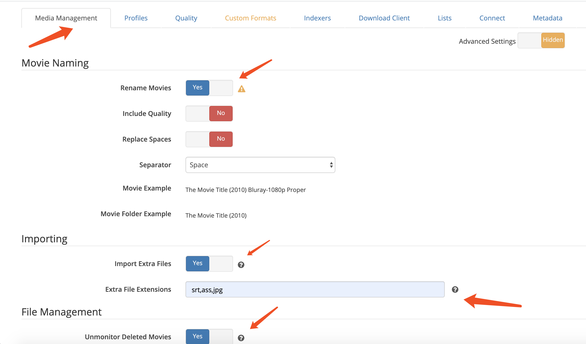
现在radarr比我刚装那会好用，基本不用打开高级设置。如果对这个命名规则不满意，可以点开高级设置，然后自行修改命名规则。对于jellyfin来说这个命名规则是可以识别的。就是现在蛋疼的找不到jellyfin的文档了，以前是能找到命名规则的说明的～～～
然后是Profile，这是控制影片质量的模板，随便点开一个比如HD-1080P这个
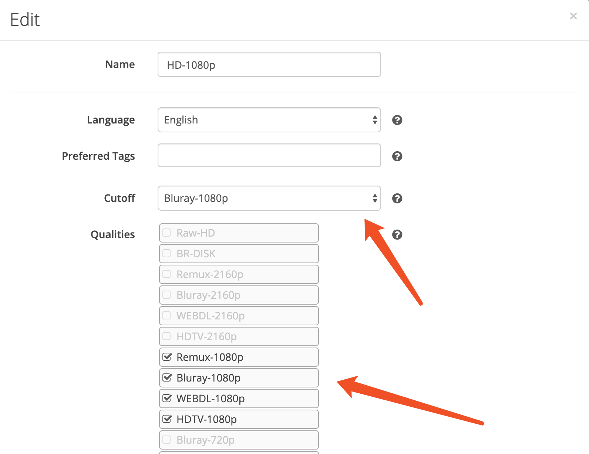
这儿只需要注意cutoff就是升级截止的质量，比如你想看的电影，一开始只有webdl版本，之后才出蓝光版本。这时候，如果启用了radarr自动提升影片质量的选项，则会先下载webdl版本，之后蓝光出来之后会删除webdl版本，替换成蓝光版本。这个cutoff就是升级到什么质量不再升级。qualities的话就是用这个配置的电影，能接受什么样的质量，越往上优先级越高。就是搜索时如果同时有remux版本跟webdl版本就优先下载remux，但是只有webdl的话，之后升级只会升级到bluray，而不会到remux。
quality是各个质量允许的文件大小，没这方面要求的话不要动。
Custom Formats，要设置这个先要把高级模式打开，然后点那个大大的加号，然后就能添加它一些预设的规则了。这个就是帮助你识别种子的信息，比如压制格式，是否有硬烧录的字幕（应该是这个叫法吧，就是这种字幕会触发转码）等等。推荐把这几个规则添加上，帮助你在手动选择种子时快速得知种子信息。
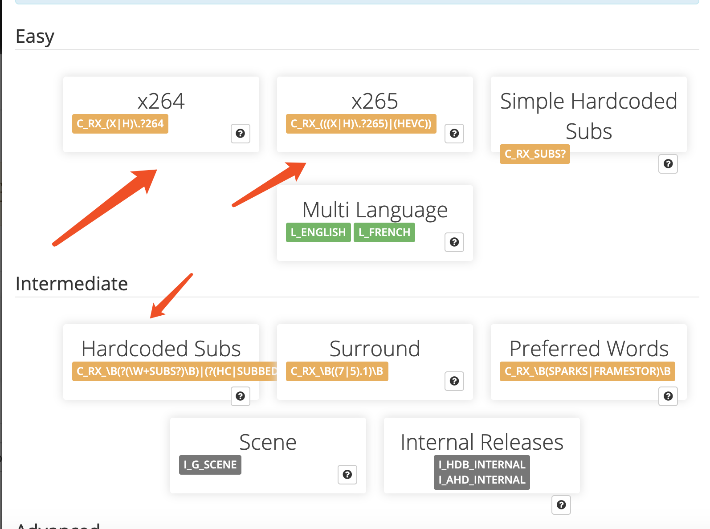
Indexer，这东西我不知道如何解释。点大大的加号，选择右下角torznab，然后进来配置页面，同时打开jackett的webui。
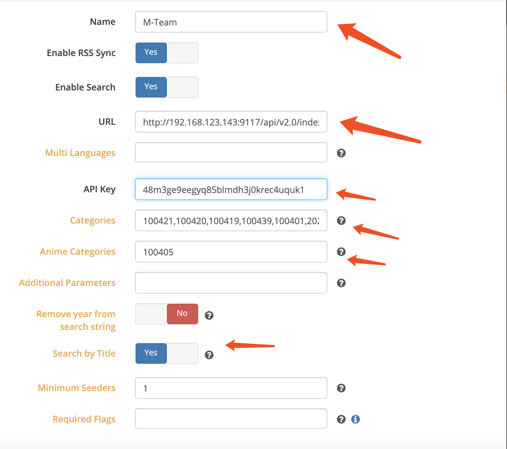
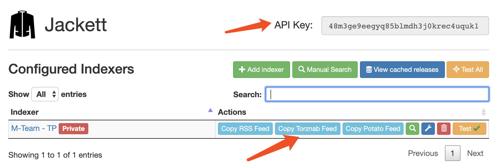
复制jackett右上角API Key进radarr的API Key，点jackett的copy torznab feed，然后粘贴进radarr的url，然后点开jackett中配置好的pt站，每一个配置好的站点边上都有一个放大镜跟扳手，点扳手。
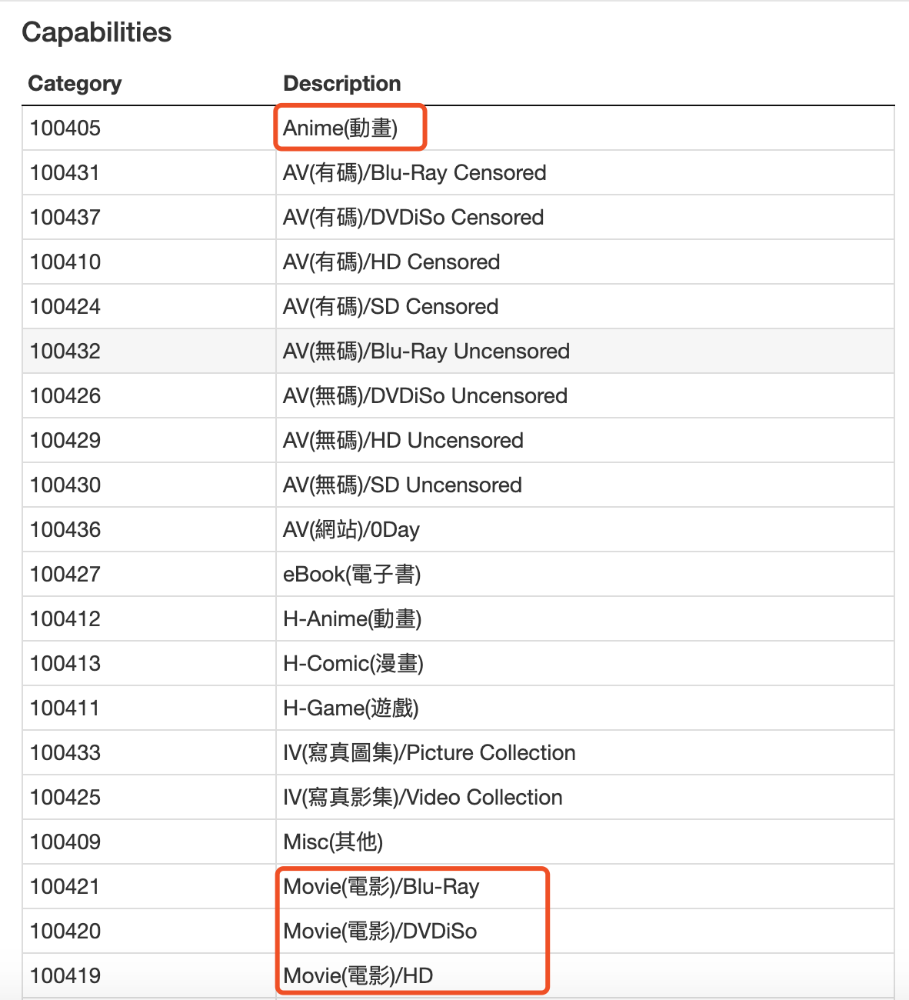
找到categories，把所有关于movie的左边的编号全复制进radarr的categories，把动漫的复制到anime categories。对于馒头，categories是100421,100420,100419,100439,100401,2020,2030,2040,2060,2070，anime categories是100405。最后把search by title打开，这是说搜索时通过标题搜索电影，不然默认是imdb id，pt站不规范的话搜索结果会少很多。最后先test一下，再保存。一个pt站配置一次，多个pt站的话就配置多个indexer。
Download client，配置下载器。还是点加号，然后选择你的下载器，比如我的qb，进到配置页面。
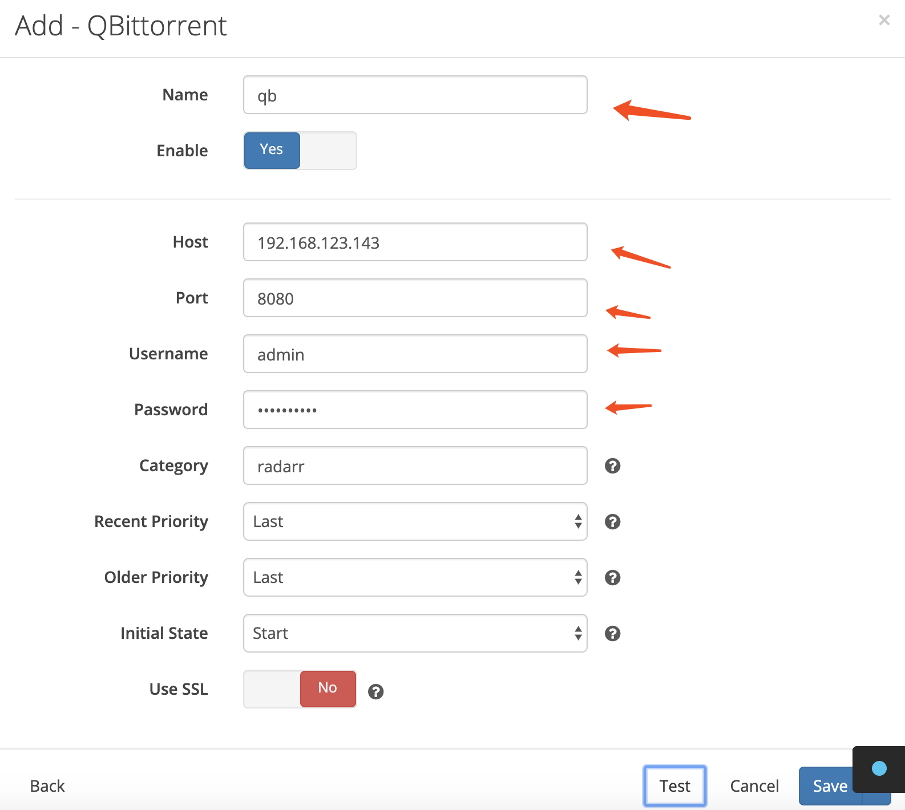
这个的话，按照自己的配置吧，没啥好说的。点test确认后保存。
Connect，就是通知媒体服务器搜刮信息。点加号，选择emby，然后进设置页面配置好，这里的API Key等jellyfin弄好了再填，把最后两个打开。现在没有API Key保存不了，那就等会弄好jf再回来配置这个。
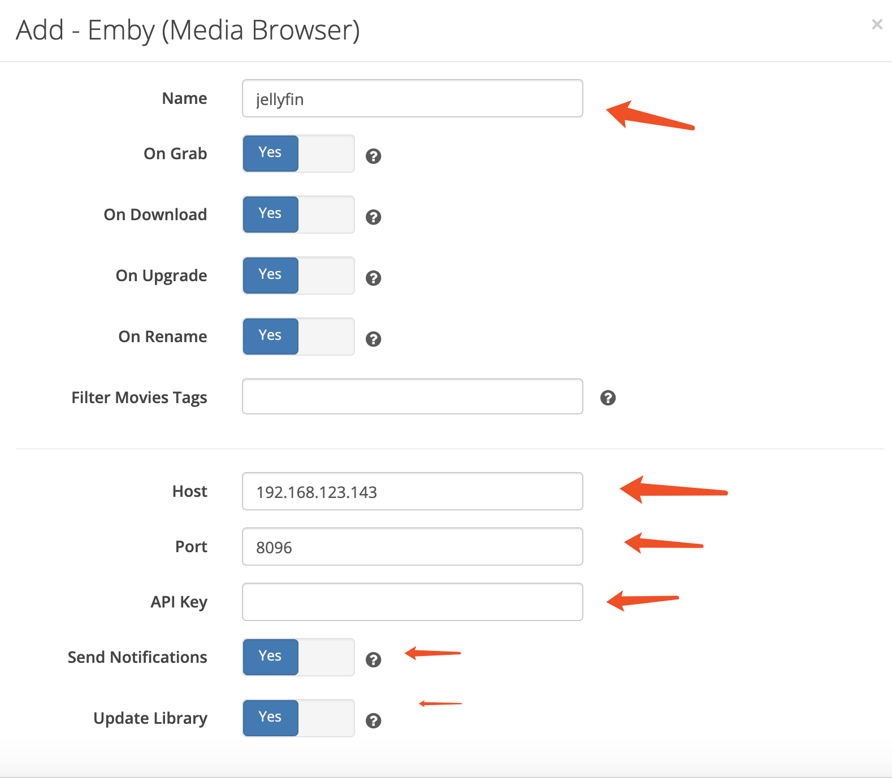
General，这个就只需要吧最下面的自动更新关了就是。然后UI没啥需求不用动。所有的就设置完成了。现在先来搜索下影片试试，还没配置qb，就暂时不下载。
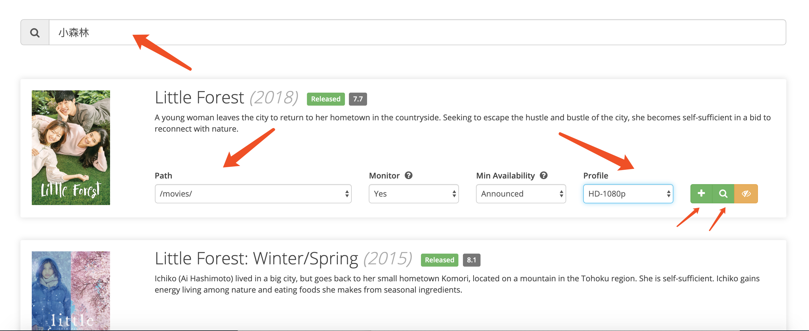
点add movies，在搜索框里搜索你想收藏的电影，path选择movies，这是最终要把影片移动到哪里去，也就是jf的搜刮文件夹。选择profile，然后最右边有一个加号和一个放大镜。加号是只添加进片库，放大镜是添加进片库并立即进行搜索。如果是pt站已经有了资源，但是不想让radarr自动选择种子下载，想自己手动选择的话，就点加号，这样只添加进片库，稍后手动选择。如果点放大镜，添加进片库就会自动搜索，有资源就根据你设定配置文件自动下载了。这里先点只添加。然后radarr开始搜索信息。在movies里选择刚添加的这个电影，点search。
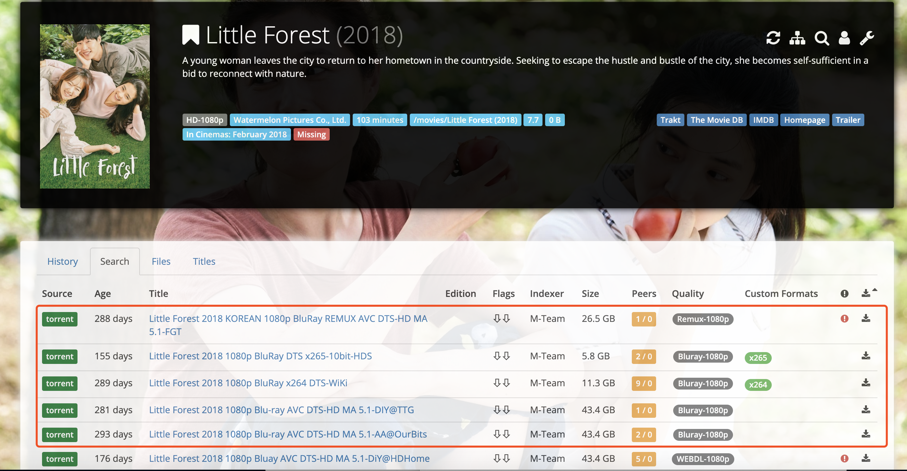
有结果了，说明radarr跟jackett的配置没错误。注意后面有红色感叹号，这些种子在自动下载时时不会被选择的，你可以看看这些种子被拒绝的原因。想要这些种子也能被选择就修改对应配置。然后来配置下载器。
5.3 qbittorrent简要配置
打开qb，首先先把页面调成中文。然后把种子管理模式调成自动，确保默认保存路径没错，然后把/downloads/watch设为监控目录，其他设置自行优化，保存。
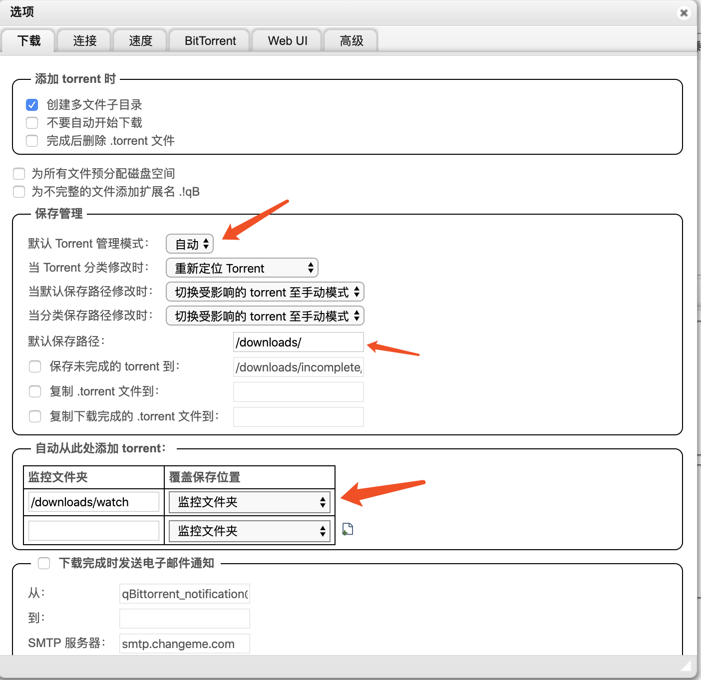
然后新建几个分类，movie、radarr、tv、sonarr、music、lidarr，设置好保存路径，比如movie保存到/downloads/movie，radarr保存到/downloads/radarr。
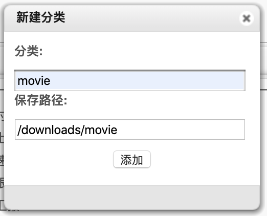
下载器就设置完成。现在来测试一下。
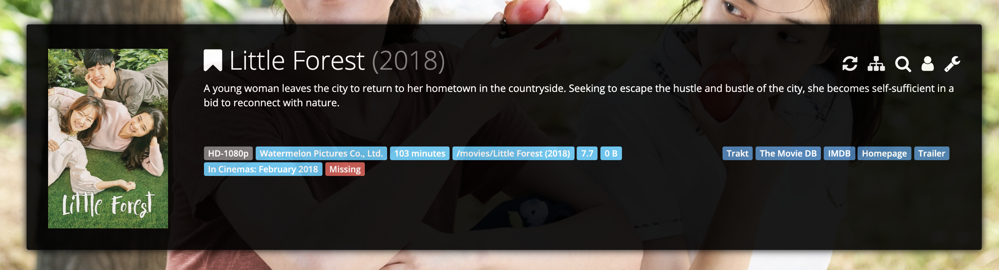
最右边这里从左之后的按钮分别是刷新影片信息；重命名预览（如果你之后修改了重命名规则，可以点这个把之前的影片按照新的规则重命名）；自动搜索（自动选择种子下载）；手动搜索（搜索完提供结果，手动选择种子）；修改影片设置。这里我就选择手动的吧，挑一个最小的下载好了。换一个吧～～，这电影都没人做种～～～。
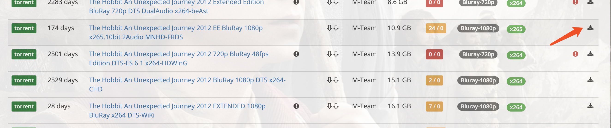
就这个吧，还是frds压的好，这个站我也进了。氛围特别好，非常推荐喜欢收藏经典电影的进。点右边下载。
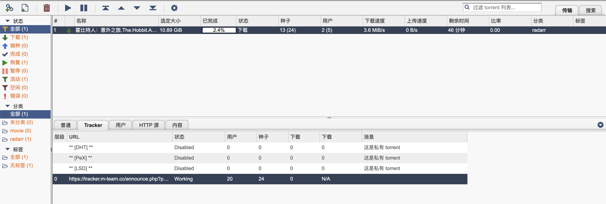
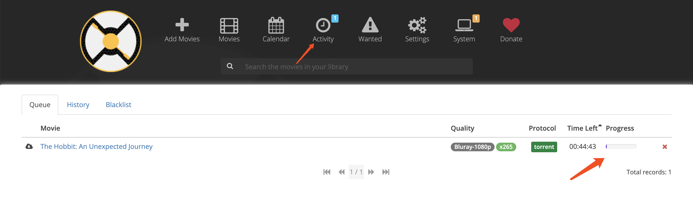
可以看到，radarr的activity已经有活动了，显示了剩余时间。qb里也有了正在下载的种子。这一切都是自动完成的，除了我想自己挑选种子外，并不需要人干预。下载完成之后，在activity>history里可以看到两条活动记录。
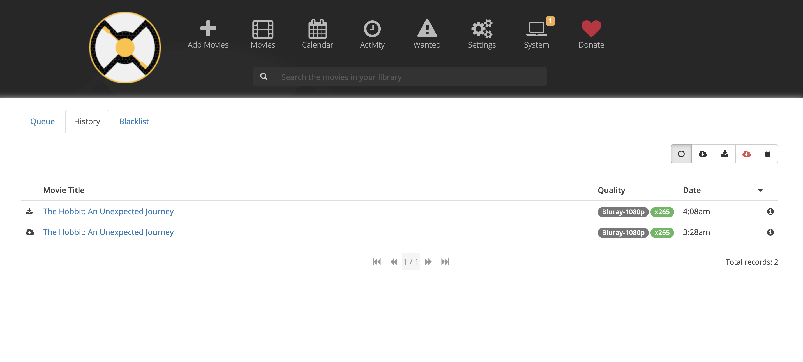
上面一条是下载完成，radarr从下载文件夹中将电影以硬连接的方式导入到了媒体文件夹中，就是最终jf搜刮的位置。并且进行了规范命名。下面一条记录是将种子推送到了下载器下载。一般来说每部电影都会有这两条记录。
最后，在wanted>manual import里可以手动导入已经下载好的电影。也很好用，就是只能移动跟复制，不能创建硬连接。
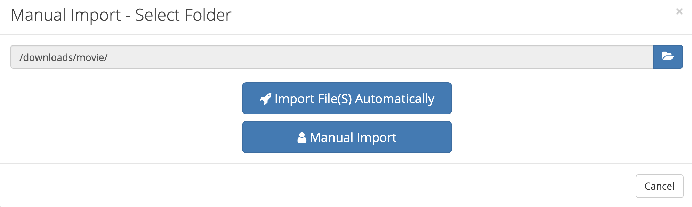
下面配置jellyfin。
5.4 jellyfin配置
这里不知道是不是因为我用的是unraid的原因，并不需要我设置，直接就进来了，也有可能是我之前弄过。设置电影文件夹为/movies，电视剧文件夹为/tv就行。搜刮器我建议只用themoviedb。其他的设置如启用硬件转码请参照阿文菌的设置，这里不再重复。阿文菌在张大妈的文章：UNRAID教程：3分钟 用安装Jellyfin 开启硬件加速转码 解码4K 打造最强家庭影院
在控制台>高级>api密钥里创建一个密钥，然后在radarr中完成connect配置。
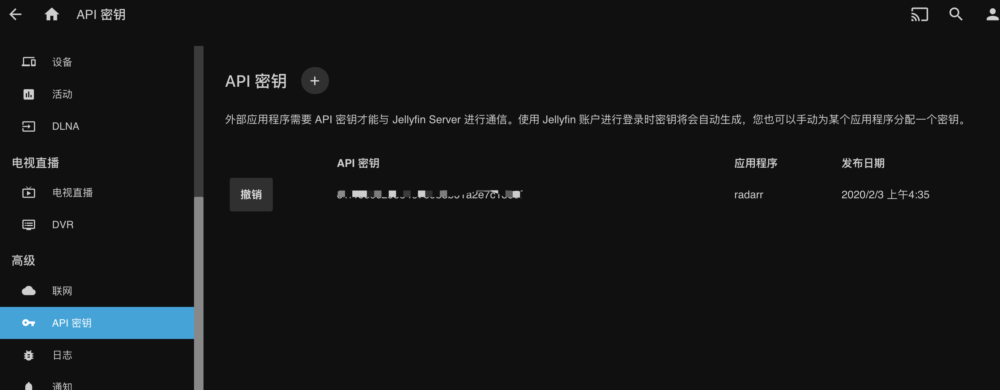
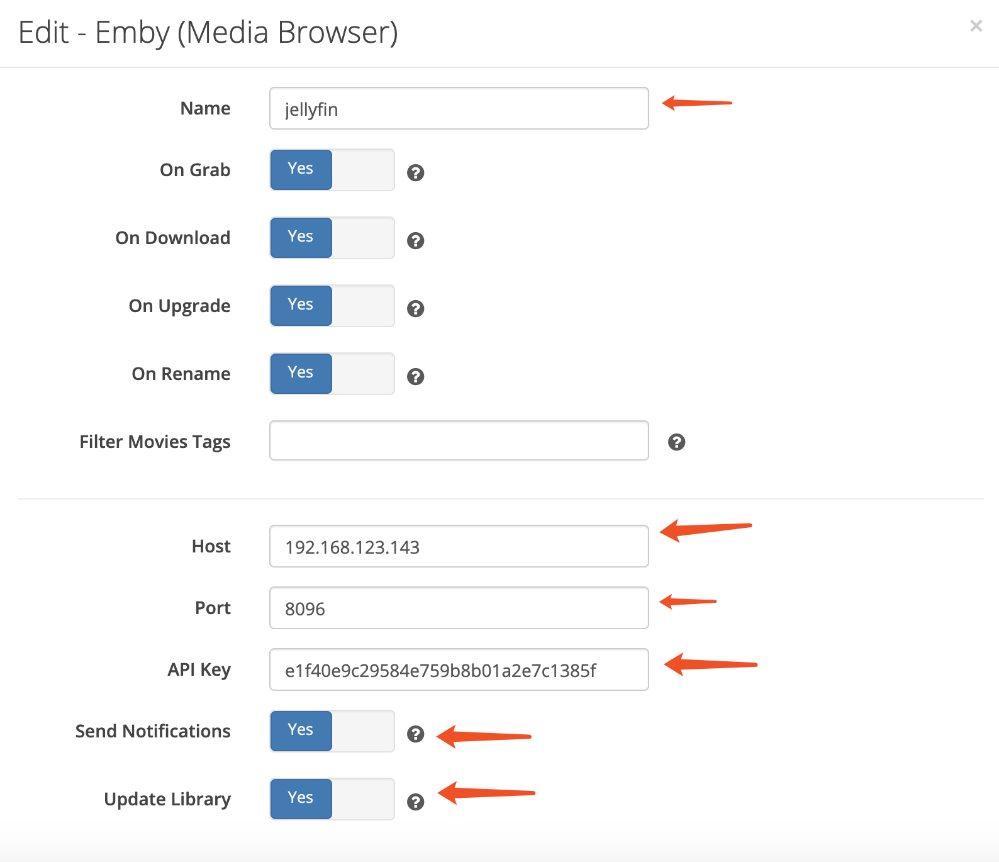
这里可以看到，刚下的霍比特人立马扫出来了。
文件夹也很有条理，不是一团乱了。
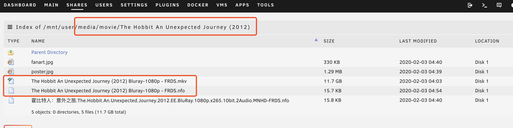
jf也就配置完了。
5.5 bazarr配置
打开bazarr，进去就是需要你设置。general并不需要设置，点next，配置字幕设置，直接到subtile providers。支持assrt、opensubtitle、zimuku。并不支持subhd。这个项目的维护者不懂中文，他在github上请求帮助维护中文字库网站支持。所以，中文字幕的确不怎么好用，但好过没有。配置很简单，把你要的字幕网站打开，输入信息就行。
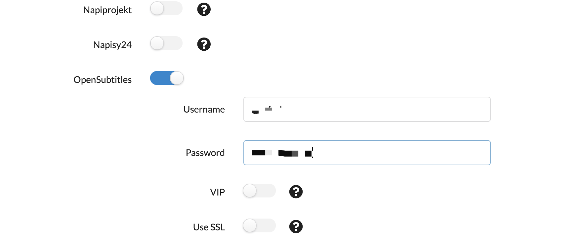
再到subtitles language，按照我的来配置。好了之后点next。
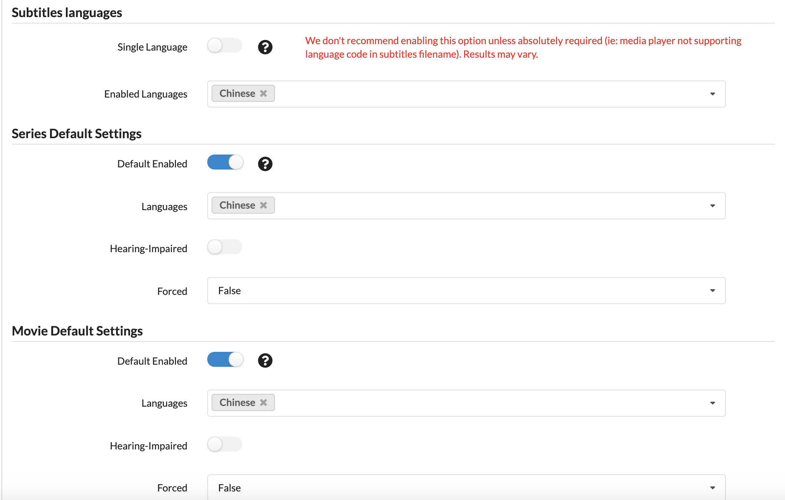
这里我就不配置sonarr了，建议大家把radarr，sonarr配置好再来配置bazarr。把use radarr打开，然后填写ip，端口号，然后将radarr里的setting>general>security下面的api key复制进bazarr这儿的api key，最后点test没错就可以保存了。
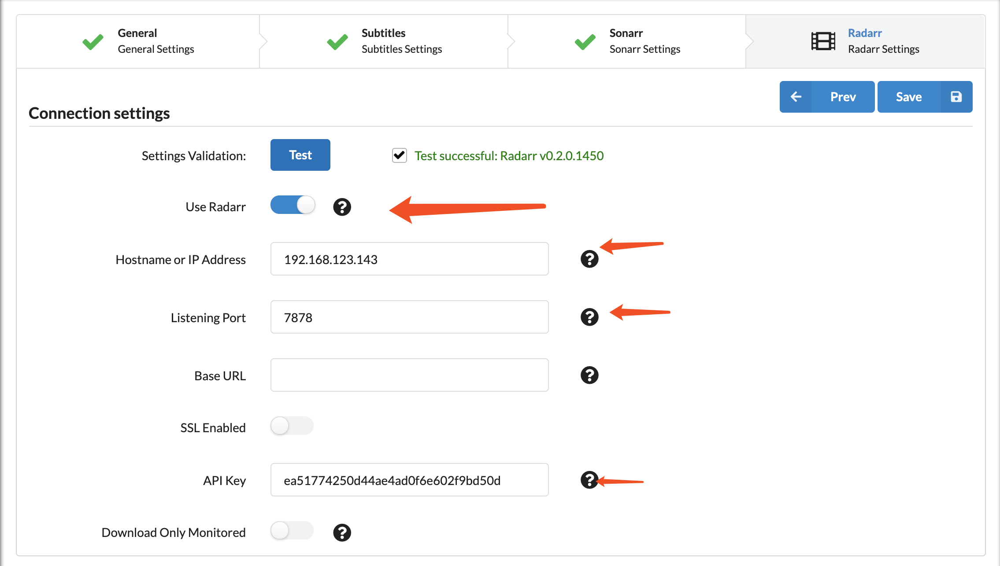
配置好了，要求重启，重启之后就会同步radarr的电影库。然后匹配每部电影缺失的中文字幕，并且自动下载。一般电影字幕容易找到，电视剧的字幕会可能找不到。不过总比没有好，同样的也支持手动搜索并选择字幕下载。自己摸索吧，这个我就不介绍了。
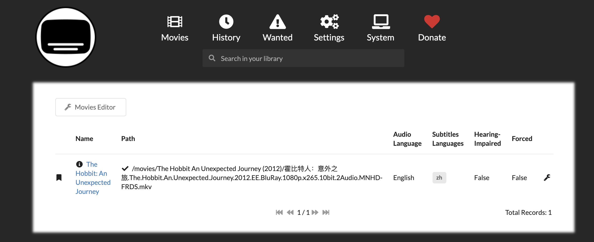
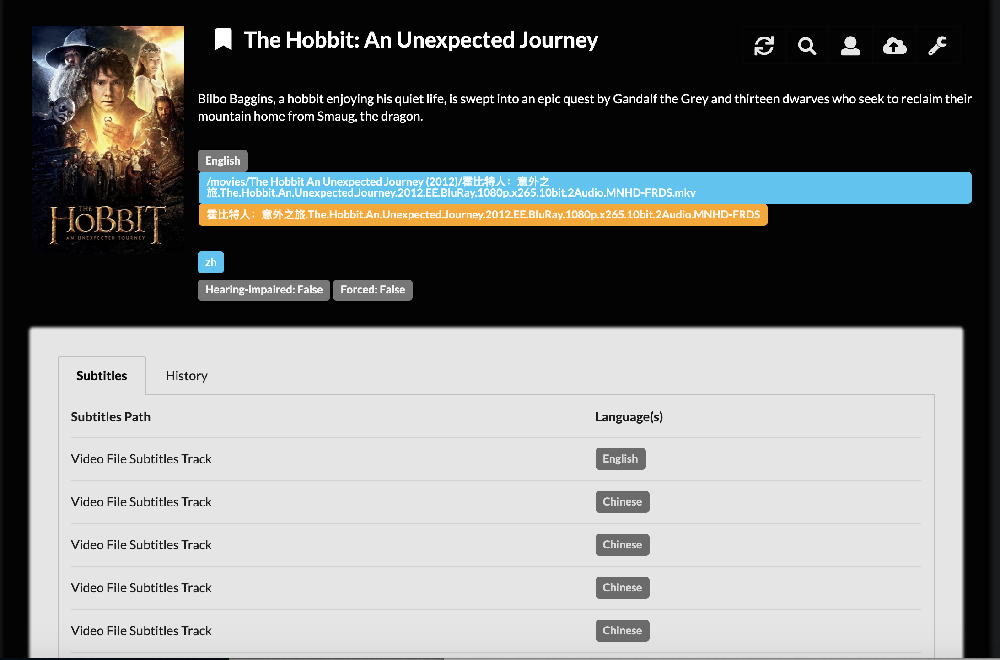
对了，点setting>subtitles>subtitle options，把ignore embedded pgs subtitles打开。这样扫描到内封的pgs字幕时，会忽略，继续下载外挂字幕。方便选择外挂字幕而不触发转码。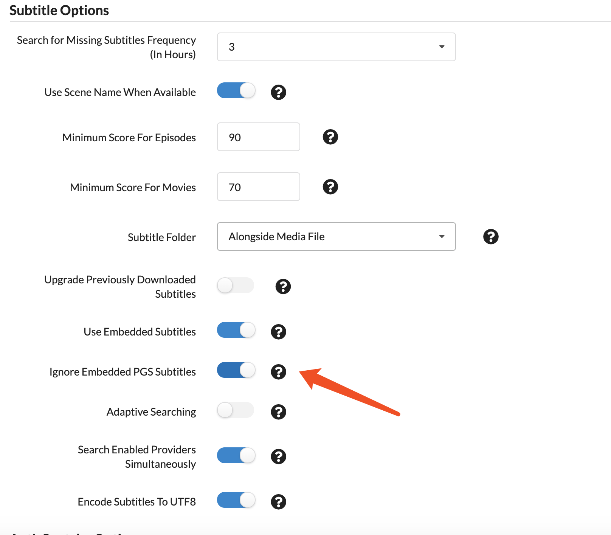
#6.结语
所有的都配置完了，lidarr，sonarr按照同样的方法进行配置。sonarr重命名是参照你媒体服务器的命名规则设置就行。不想折腾的话默认就好，能识别。还有不懂的大家多看看github，不行的话再问我吧。